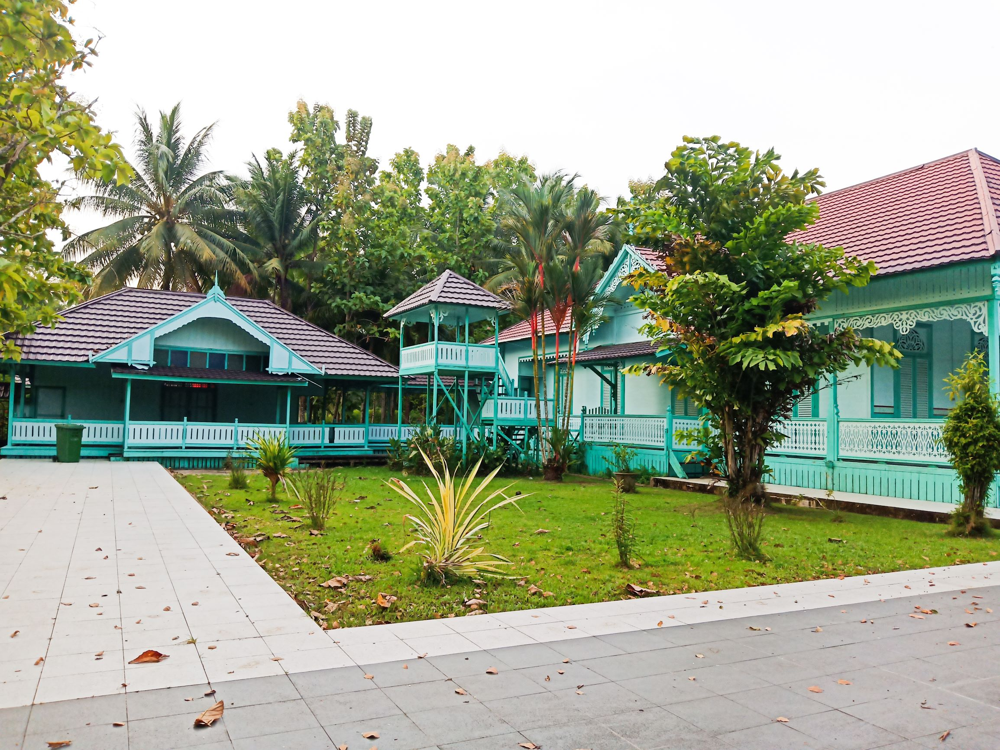

Istana Amantubillah

Bangunan Utama
Tempat singgasana raja beserta permaisuri hingga para keluarga raja.

Halaman Istana
Tempat antara pintu masuk gerbang istana dan bangunan istana

Sayap Kanan
Tempat untuk mempersiapkan jamuan makan bagi kalangan keluarga istana

Sayap Kiri
Tempat untuk mengurus administrasi pemerintahan dan pertemuan raja

Tampak Keseluruhan Istana
Penuh dengan keasrian pepohonan
Previous
Next
Destinasi Religi dan Sejarah - Klik foto untuk melihat foto yang lainnya.(Klik bagian kanan atau kiri foto)
Sejarah
Istana Amantubillah atau Keraton Amantubillah merupakan nama istana dari Kerajaan Mempawah, mempunyai arti "Aku beriman kepada Allah". Kompleks Istana Amantubillah berdiri kukuh di Desa Pulau Pedalaman, Kecamatan Mempawah Timur, Kabupaten Mempawah, Provinsi Kalimantan Barat, Indonesia.
Istana ini didominasi oleh warna hijau muda dan dibangun pada masa pemerintahan Gusti Jamiril yang bergelar Panembahan Adiwijaya Kusuma (1761-1787). Terjadi peristiwa kebakaran pada tahun 1880 yang melanda Istana Amantubillah. Renovasi dan pemugaran kemudian dilakukan pada masa pemerintahan Gusti Muhammad Akkamaddin (1902-1943) sehingga Istana Amantubillah dapat berdiri kembali pada tanggal 2 November 1922.
Bagian Istana
Kompleks Istana Amantubillah Mempawah ini dibagi menjadi tiga bagian utama yakni bangunan utama, sayap kanan dan sayap kiri. Terdapat tulisan "Mempawah Harus Maju, Malu dengan Adat" pada pintu gerbang istana. Dahulu, bangunan utama di istana ini merupakan singgasana raja beserta permaisuri hingga para keluarga raja. Sementara itu, bangunan bagian kanan dijadikan tempat untuk mempersiapkan jamuan makan bagi kalangan keluarga istana. Segala keperluan jamuan makan bagi para tamu istana dipersiapkan di bangunan ini.
Sementara, pada bagian gedung sebelah kiri dijadikan ruangan pusat untuk mengurus administrasi pemerintahan kerajaan. Selain itu, bangunan di bagian kiri ini juga sering digunakan sebagai aula tempat pertemuan raja dengan para abdi dalem, seperti rumah kerajaan pada umumnya.
Saat ini ketiga bangunan sudah berubah fungsi seperti bangunan utama saat ini sudah dirubah menjadi museum Kerajaan Mempawah yang menyimpan berbagai peninggalan kerajaan seperti singgasana raja, busana kebesaran, payung kerajaan dan lain sebagainya. Bangunan ini juga menyimpan foto-foto raja yang pernah berkuasa di istana ini beserta para keluarganya. Sementara itu, bangunan kanan bangunan ini memiliki fungsi sebagai pendopo istana dan bangunan bagian kiri saat ini dijadikan tempat tinggal para kerabat Kerajaan Mempawah. Di kompleks istana ini pengunjung juga dapat melihat kolam bekas pemandian sultan beserta keluarganya namun saat ini kondisinya sudah tidak berfungsi lagi karena terjadi pendangkalan dan tertutupnya saluran air yang menghubungkan kolam dengan anak Sungai Mempawah.